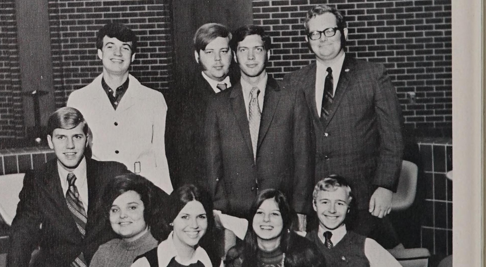

#
John Lyne wins the presidency before the race begins
No opponent filed against Lyne for the 1970-71 Associated Students presidency, and the Herald reported him elected without a contest.
Associated Students · academic year

Ran for the Associated Students' second officer spot against David Porter in the 1969 election and lost; won the presidency outright in the 1970 election, unopposed, for the 1970-71 term. The plaque's pairing with Larry Zielke under 1970-71 is wrong - Zielke's term was 1969-70; see that year.
Lyne first ran for Associated Students office in the March 1969 election, contesting the vice-presidential ('second spot') race against David Porter and losing; Porter went on to serve as Larry Zielke's vice president for 1969-70. A year later, no one filed against Lyne for the 1970-71 presidency, and the Herald reported on 13 March 1970 that he had 'won the presidency before the race begins.' Doug Alexander won the vice presidency the same election cycle, beating Steve Tichenor, in a vote held the following week.
The term began against the backdrop of the Kent State shootings that May: the Associated Student Congress's October 1970 resolution on the women's curfew ran in a Herald issue whose letters page was dominated by students arguing about Kent State, and the same fall the Board of Regents seated eight students on the Academic Council. Beyond the curfew resolution, the Congress passed a lecture bill on 6 November 1970 funding campus appearances by William Kunstler and Bernadette Devlin, and separately endorsed a proposed new constitution two weeks later; a study committee kept refining it, reaching judicial-reform provisions by February 1971.
John Lyne was one of the most visible students on the Hill before taking office, writing a steady stream of Herald columns through 1969-70 and representing Kentuckians in the national draft lottery drawing in December 1969.
Lyne won the Associated Students presidency in March 1970 without opposition, the Herald reporting that he had captured the office before the race began.
Through 1970-71 Lyne fought his administration's corner in the Herald's letters column, complaining in January that he had been kept in the dark about an appointment and defending the Associated Students lecture series against attack that April, in the issue that reported W.S. Moss taking the oath as regent.
Sources for this account
Everything the archive holds on John Lyne, gathered on one page.
Everyone the record shows in office this year. Each name goes to their own page, with every office they held and everything the archive says they did.
Unopposed.
Herald 49:35, 13 Mar 1970 PDFBeat Steve Tichenor.
Herald 49:39, 27 Mar 1970 PDFButler was treasurer of Associated Students in 1970-71. He appears only in the Executive Council photograph caption; the yearbook's signed essay by Lyne does not discuss individual officers.
1971 Talisman, Associated Students, p. 67Gray was secretary of Associated Students in 1970-71. As with Butler, the only appearance is the Executive Council photograph caption.
1971 Talisman, Associated Students, p. 67Eyler chaired the seven-member Judicial Committee of Associated Students in 1970-71. The yearbook says the committee interpreted the A.S. constitution, heard appeals of all election disputes, ruled on student traffic violations and considered questions of student conduct referred to it by the Dean of Student Affairs.
1971 Talisman, Associated Students, pp. 68-69Freville was vice-chairman of the Judicial Committee in 1970-71. The committee's group photograph caption prints his office beside his name. The volume's senior section also lists him with Associated Students and the Judicial Council, without giving an office.
1971 Talisman, Associated Students, pp. 68-69Jones was secretary of the Judicial Committee in 1970-71. The volume does not say whether she is the Linda Jones elected Associated Students president in April 1971, and this archive should not merge the two names without a source that connects them.
1971 Talisman, Associated Students, pp. 68-69Chair: David Eyler
Seven student members, per the 1971 Talisman, p. 68: it interpreted the Associated Students constitution, heard appeals of all election disputes, ruled on student traffic violations and considered questions of student conduct referred to it by the dean of student affairs. Michael E. Freville was vice-chairman and Linda Jones secretary.
Set all election laws, decided disputes arising from elections and reported on proposed amendments to the constitution, per the 1971 Talisman, p. 68. Its photograph caption names nine members and no chairman.
The 18 things student government staged or ran for the campus this year, drawn from the chronology below. Every one of them also appears on the programmes page, which runs the whole sixty years together.
No opponent filed against Lyne for the 1970-71 Associated Students presidency, and the Herald reported him elected without a contest.
The summer Herald reported that the Associated Students would host a conference on discount programmes and that discount cards would be given out at fall registration. Western was by then teaching other Kentucky campuses how to run the scheme.
An editorial framed it as the Regents opening doors to student expression in academics. Representation was arriving faster in the curriculum committees than on the board itself.
Rick Neumayer reported in the underground student paper Expatriate, under the headline "Regents Slash Academic Council Proposal," that the Board of Regents had cut an Academic Council proposal. TopSCHOLAR dates this issue only to 1970, with no specific day given; the archive does not hold the article's full text, so what was cut is not established.
Kaye Thomas reported in the Herald that the discount card offered savings to students. The card was handed out at registration and ran through the year; John Lyne's own account of his term said the discount programme with local merchants had been maintained.
Clark Hanes reported in the Herald of 4 September 1970, under the headline "Failure Maintain Quorum Delays Action on Key Issues," that a failure to maintain a quorum delayed action on key issues before the Associated Student Congress.
The Herald reported, under the headline "Associated Students Resolution Urges Police Department Probe," an Associated Students resolution urging a probe of the police department. The archive does not hold the article's text, so the resolution's subject and its outcome are not established.
The Herald announced that the Associated Students would present documentaries in a double feature that night. It is the first clearly labelled film screening the government put on itself, separate from the subscription-based Cinema Guild.
Pacific Gas and Electric played at Western as part of Homecoming weekend in October 1970. Ernie Hearion reviewed the show in the Herald of 13 October under the heading "Utilities Down Sharply on Entertainment Market", and the 1971 Talisman said the group won over very few of the crowd. The same yearbook recorded that the Herald was outspoken that year about the entertainment on which the Associated Students chose to spend students' activity funds.
College Heights Herald 50:13, 13 Oct 1970 (review); 1971 Talisman, Homecoming and Concerts PDF
The Herald of 2 October 1970 reported, under the headline "Voters to Decide Associated Student Congress Constitution Quorum Question," that a constitutional quorum amendment would go before students in the following Tuesday's election, on the same ballot as six Academic Council seats. The same issue reported a primary turnout of 8.9 per cent, under "Primary Vote Disappointing as 8.9 Per Cent Cast Ballots." The archive does not record how the quorum question was decided.
The Herald of 29 September billed the Ides of March for that Saturday. Travis Witt's review on 6 October reported the concert had attracted a meagre crowd, one of several poor houses that made 1970-71 a difficult year for campus bookings.
The Herald of 6 October 1970 announced that the curtain would rise the next day on the Broadway musical '1776'. Writing in the 1971 Talisman, Associated Students president John Lyne listed the co-sponsorship of '1776' among the theatrical events his government had backed as it widened its work from entertainment into cultural programmes. The same yearbook places the performance among that week's Homecoming activities.
Richard Morris reported that a unanimous vote from the Regents had put the new speaker policy into effect. John Lyne said afterwards that the push for an open speaker policy, from student demand through to implementation, had yielded results; it is what made the Kunstler and Devlin bookings possible.
The Associated Student Congress passed a curfew resolution; the Herald reported abolition was unlikely that year and editorialised that the curfew was obsolete. The letters page in the same issue is almost entirely students arguing about Kent State.
The Herald reported the Associated Student Congress would show films for Halloween. The same issue carried a letter from Mania Ritter mourning the death of concerts on campus.
David Sutherland announced in the Herald of 30 October that the civil rights comedian Dick Gregory would speak on Monday, under an editorial headed "Dick Gregory Go-Ahead Poses Second Test." Clark Hanes interviewed him on 3 November and Ernie Hearion reported his line that the fate and destiny of the nation depended on youth. The 1971 Talisman dates the appearance to 12 November; the Herald's own contemporaneous coverage places it at the start of the month.
The Associated Student Congress passed a lecture bill funding campus appearances by William Kunstler and Bernadette Devlin, and the Herald reported the Congress was drafting a new constitution.
Mason Ralph announced in the Herald of 17 November that the Temptations would sing the next day. His review on 20 November reported the group drew a capacity crowd and the concert evoked mixed reactions; the 1971 Talisman said they kept a packed house hypnotised.
capacity crowd, per the Herald review
The Associated Student Congress endorsed a proposed new constitution, continuing the reform effort launched two weeks earlier. The same issue previewed William Kunstler's scheduled Monday lecture, funded by the Congress's 6 November bill.
David Sutherland reported in the Herald of 8 December 1970, under the headline "Constitution Referendum Set Without Election Unit Help," that the constitution referendum had been arranged without the University's usual elections body.
Mason Ralph announced on 4 December that Ravi Shankar was coming that Wednesday, and the 8 December issue put the sitar player in the concert spotlight for the following night. Lyne cited Shankar as proof that the government was bringing names that were not of the top forty variety.
The Herald of 11 December 1970 reported, under the headline "Constitution Passes; 2,094 Students Vote," that the new Associated Students constitution had been approved by referendum, with 2,094 students voting.
Clark Hanes reported in the Herald of 11 December that the Georgia legislator Julian Bond would speak that Sunday. The 1971 Talisman lists Bond on 13 December among the more controversial speakers the Associated Students brought to campus.
In a signed statement in the 1971 Talisman, president John Lyne wrote that the entertainment side of Associated Students had been expanded into a cultural programmes concept, that big-name concerts continued but names outside the top forty such as Ravi Shankar had been brought in, and that theatrical events had been sponsored, including the co-sponsorship of "1776". He recorded a student-run lecture series as that year's significant addition, said the student discount programme with local merchants had been maintained, and said the organisation was working towards a legal service for students that would include a legal defence fund and a student advocates' corps.
A committee was formed to study Associated Student constitutions, renewing the reform effort that had produced a second constitution the year before.
Resolutions gained approval in the Associated Students Congress, and the government pressed its call for a center for students in the Herald's pages.
The Herald of 20 November 1970 had billed the Chicago Seven lawyer to speak that Monday; he did not appear until the new year. The paper announced on 29 January that Kunstler was set to speak, and Peggy Kirkpatrick's piece on 2 February headed "Courtroom Paladin to Speak Thursday" carried the date. The 1971 Talisman shows Lyne hosting him on campus.
The constitution study committee took up judicial reform provisions, the Herald reported. The same issue carried a student's published praise for William Kunstler's campus lecture.
The Herald announced the Irish MP's lecture on 19 February, called her an Irish firebrand on 23 February, and ran "Irish Socialist Speaks Tonight" on the day itself. Her appearance and Kunstler's were funded by a lecture bill the Associated Student Congress passed the previous November.
With filing open for the spring elections, the Herald reported twenty student government offices going begging for candidates.
The Herald of 26 February announced that the pop vocalist Neil Diamond would present a concert that Thursday. The 1971 Talisman lists Diamond and the Trinidad-Tripoli Steel Band as the spring entertainment.
By election eve the field had filled out: the Herald counted 84 students seeking campus offices in Tuesday's voting.
The Herald announced on 30 March that Dr S. I. Hayakawa would lecture that Thursday. The 1971 Talisman lists him with Kunstler and Devlin as the spring speakers the Associated Students had scheduled.
Linda Jones was elected the first woman president of the Associated Student Government. The Western Alumnus pictured her being sworn in alongside faculty regent Lowell Harrison.
The newly elected Associated Student Congress leaders aired major issues for the Herald and gave clues on what to expect in the fall.
The Herald of 27 April 1971 reported, under the headline "Re-Evaluation: Survey of Courses is Postponed Till Fall," that the survey of courses had been pushed back to the fall semester.
The 1971 Talisman reported that, to promote better communication between students and their government, Lyne set up a weekly radio programme to tell of the Associated Students' work. The Herald front page reproduced in the yearbook records him saying the programme could be started within the hour.


Every source cited above, once, with the number of entries that rest on it.
Preferred citation
“1970-71,” SGA 60: Student Government at Western Kentucky University, 1966–2026, revised 31 August 2026, y/1970-71.html
Where a name on this page differs from the plaque in the SGA Chambers, the difference is explained above and recorded on the corrections page.